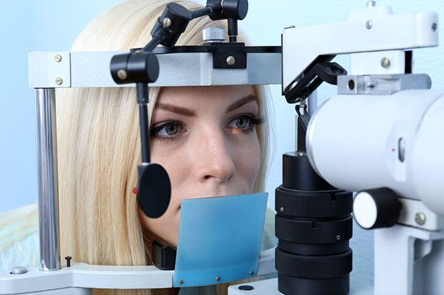

Bună ziua, doctore. Astăzi vrem să vorbim despre cum să păstrăm o vedere bună și ce să facem dacă a început să scadă.
Bună ziua, voi răspunde cu plăcere la toate întrebările de interes și voi vorbi despre cele mai recente progrese în domeniul oftalmologiei.
Spuneți-mi, vă rog, o mulțime de oameni au acum probleme de vedere și ce boli apar cel mai frecvent?
Astăzi, persoanele cu vedere perfectă sunt o raritate. Potrivit OMS, în lume, aproximativ 2 miliarde de oameni suferă de boli oculare. În același timp, în jumătate din cazuri, boala a apărut din cauza lipsei de măsuri preventive sau a unui tratament adecvat.
Problemele grave încep cu deteriorarea vederii. Dacă ignorați această situație, este posibilă dezvoltarea unuia dintre cele trei scenarii: cataracta, glaucomul sau distrofia părților centrale ale retinei. Cataracta se manifestă prin opacitate în cristalinul. Cu distrofie, vederea centrală scade. Și în cazul glaucomului - pierderea vederii este ireversibilă, deoarece nervul optic central moare.
Am auzit că glaucomul este cea mai periculoasă boală. Ce reprezintă acesta?
Când începe să scadă vederea, s-ar putea să nu bănuiți nici măcar că glaucomul se dezvoltă deja. În stadiile incipiente, este dificil de diagnosticat și poate fi asimptomatic. Cel mai adesea, glaucomul se manifestă atunci când o persoană își pierde câmpul vizual. Se întâmplă că un ochi este deja orb, iar persoana nu a observat și caută ajutor atunci când singurul ochi este într-o stare de neglijentă. Până în prezent, glaucomul se întinerește, la fel ca o serie de alte patologii, cum ar fi cataracta și retinopatia.

De ce vederea la tineri începe să se deterioreze?
Există o mulțime de factori. Desigur, parțial sănătatea noastră este determinată de genetică, dar în majoritatea cazurilor, modul nostru de viață duce la probleme.
Ce tratament este practicat cel mai adesea?
Sunt trei dintre aceștia: conservator (medicamentos), chirurgical și cu laser. Alegerea tacticii terapeutice este determinată de tipul bolii. De regulă, chiar și glaucomul poate fi tratat medical, reducând presiunea intraoculară, îmbunătățind alimentarea cu sânge și normalizând metabolismul în țesuturile globului ocular.
Adică se poate face fără operație și corecție cu laser?
Persoanelor cu miopie și hipermetropie care au început să dezvolte boli oculare cresc o legătură peptidică cu medicamente. Deci, puteți evita nu numai consecințele grave sub formă de distrofie, cataractă și glaucom, ci și restabiliți vederea anterior pierdută.
Vă rugăm să ne spuneți mai multe detalii.
Peptidele pot întări retina ochiului cu 50-90% și vindecă întregul organ vizual. Acestea conțin lanțuri scurte de aminoacizi și acționează ca regulator la nivel celular.
Și unde sunt conținute?
Unul dintre cele mai populare și recomandate medicamente cu conținut ridicat de peptide pe care le folosesc în mod activ în practica mea este . Întărește structura celulelor retinei și a vaselor de sânge, normalizează biosinteza proteinelor și afectează pozitiv expresia genomului. Intrând în organism, ajută la transmiterea semnalului de la ADN la proteine. Datorită acestui fapt, informațiile din ADN ajung la celule și începe procesul de recuperare a proteinelor, întărirea capilarelor și recuperarea generală a ochilor.
Adică oamenii cu vedere proastă se pot o recupereze?
În majoritatea cazurilor, da. La testarea medicamentului a fost efectuat un studiu clinic mare care implică pacienți cu procese degenerative în retină și cornee în ochi.
Participanții au avut plângeri de deteriorare a vederii, procese distrofice și perturbări ale vaselor de sânge în globii oculari. Unii dintre ei au observat modificări patologice progresive în toate părțile organului vizual. După începerea tratamentului cu , efectul a fost observat la 98% dintre pacienți. Și indiferent de severitatea și tipul bolii. Medicamentul a ajutat la îmbunătățirea indicațiilor atât la persoanele cu miopie, cât și la pacienți cu hipermetropie.
Ce rezultate arată practica dvs.?
Când eu prescriu pacienților , după cursul tratamentului, fiecare are o dinamică pozitivă în parametrii retinei, adică – îmbunătățirea vederii. Și indiferent de diagnosticul de hipermetropie sau miopie.
De asemenea, observ dispariția blefarospasmului, fotofobiei și lăcrimării. După un singur curs cu medicamentul , există o extindere a vederii periferice și o scădere sau dispariție a zonelor oarbe în câmpul vizual al pacienților.

În ce boli oculare medicamentul este eficient?
Are spectru destul de larg de acțiune, deoarece mușchii oculari vin în ton. Cu aplicarea cursului, mai multe sarcini importante sunt rezolvate simultan:
- tensiunea, inflamația, iritarea și oboseala ochilor sunt eliminate;
- sindromul de ochi uscat este eliminat;
- presiunea intraoculară este normalizată;
- claritatea vizuală crește;
- apariția bolilor oculare este prevenită.
Există contraindicații la medicament?
nu provoacă reacții din partea imunității, prin urmare, utilizarea sa este sigură pentru persoane cu alergii. De asemenea, nu provoacă efecte secundare și dependență de medicament.
Din păcate, medicamentul este destul de greu de găsit în vânzarea liberă. Cel mai adesea poate fi cumpărat în clinici private și farmacii. Dar, din cauza eficienței ridicate, este răscumpărat imediat după livrare. Multe rețele cresc în mod constant prețurile, așa că vă recomandăm să cumpărați direct de la producător. Mai ales că direct de la producție livrarea se efectuează în orice oraș fără marje, ceea ce este foarte convenabil.
Vă mulțumesc foarte mult pentru interviu! Cred că mulți oameni au reușit să găsească o mulțime de informații utile pentru ei înșiși.
Și vă mulțumesc pentru invitație. Sper că am dezvăluit în detaliu și clar toate subiectele care vă interesează.